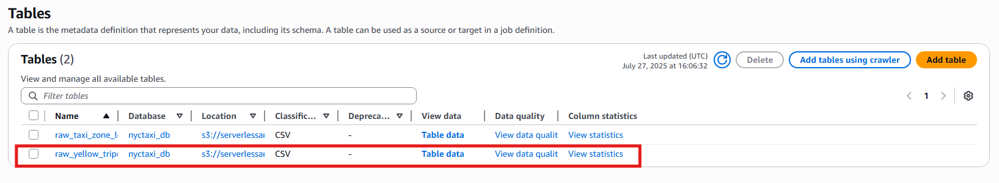
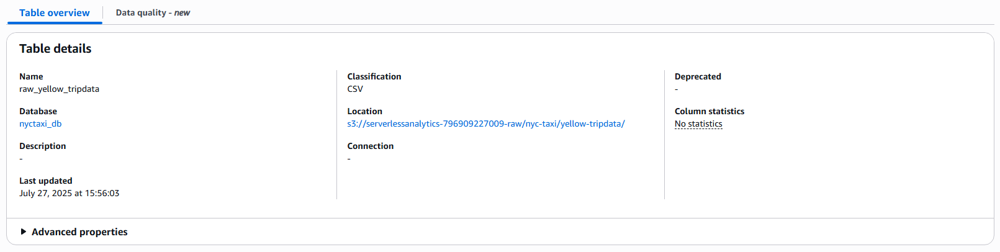
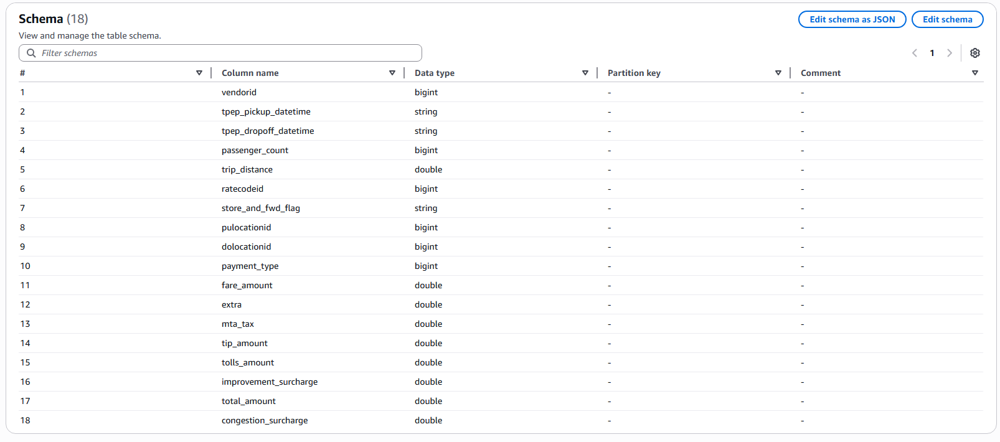

Glue Data Catalog chứa các tham chiếu đến dữ liệu được sử dụng làm nguồn và đích cho các tác vụ ETL (trích xuất, chuyển đổi và tải) trong AWS Glue. Nó cũng duy trì một cái nhìn tổng thể về dữ liệu và cho phép các dịch vụ AWS khác như Athena, EMR, và Redshift Spectrum truy cập dữ liệu đó.
Trong thanh điều hướng bên trái, nhấn vào Tables. 
Trên trang Tables, nhấn vào tên bảng raw_yellow_tripdata để xem chi tiết siêu dữ liệu và thông tin schema.

